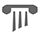

首页
博客集
百度
Google
GitHub
StackOverflow
NPM
GitHub
GitLab
Gitee
Bitbucket.org
StackOverflow
Google
百度
LeetCode
V2EX
SegmentFault
CSDN
掘金
Google翻译
百度翻译
Node.js
Node.js 是一个基于 Chrome V8 引擎 的 JavaScript 运行时。
NVM
NVM 是 node.js的版本管理器，旨在按用户安装并使用shell调用。nvm可在任何POSIX兼容shell程序（sh，dash，ksh，zsh，bash）上运行，尤其是在以下平台上：unix，macOS和Windows WSL。
NPM
npm是Node.js的软件包管理器 。它创建于2009年，是一个 开源项目， 旨在帮助JavaScript开发人员轻松共享打包的代码模块。
Yarn 中文网
Yarn 是 Facebook, Google, Exponent 和 Tilde 开发的一款新的 JavaScript 包管理工具。它的目的是解决这些团队使用 npm 面临的少数问题
CNode社区
CNode 社区为国内最专业的 Node.js 开源技术社区，致力于 Node.js 的技术研究。
开发框架
Express
基于 Node.js 平台，快速、开放、极简的 Web 开发框架
Koa
koa 是由 Express 原班人马打造的，致力于成为一个更小、更富有表现力、更健壮的 Web 框架。使用 koa 编写 web 应用，通过组合不同的 generator，可以免除重复繁琐的回调函数嵌套，并极大地提升错误处理的效率。koa 不在内核方法中绑定任何中间件，它仅仅提供了一个轻量优雅的函数库，使得编写 Web 应用变得得心应手。
Hapi
Hapi是基础功能相对丰富的框架。开发人员更专注于业务，而不是花时间构建基础架构。配置驱动的模式，区别于传统的web服务器操作。
Restify
restify是一个基于Nodejs的REST应用框架，支持服务器端和客户端。restify比起express更专注于REST服务，去掉了express中的template, render等功能，同时强化了REST协议使用，版本化支持，HTTP的异常处理。
Fastify
Fastify 是一个高度专注于以最少开销和强大的插件架构提供最佳开发人员体验的 Web 框架
Egg
Egg.js 为企业级框架和应用而生，我们希望由 Egg.js 孕育出更多上层框架，帮助开发团队和开发人员降低开发和维护成本。
Midwayjs
Midway (中途岛) 品牌是淘宝技术部（前淘宝UED）前端部门研发的一款基于 Node.js 的全栈开发解决方案。它将搭配团队的其他产品，Pandora.js 和 Sandbox，将 Node.js 的开发体验朝着全新的场景发展，让用户在开发过程中享受到前所未有的愉悦感。
Nest
Nest 是一个用于构建高效，可扩展的 Node.js 服务器端应用程序的框架。它使用渐进式 JavaScript，内置并完全支持 TypeScript（但仍然允许开发人员使用纯 JavaScript 编写代码）并结合了 OOP（面向对象编程），FP（函数式编程）和 FRP（函数式响应编程）的元素。
ThinkJS
ThinkJS 是一款面向未来开发的 Node.js 框架，整合了大量的项目最佳实践，让企业级开发变得更简单、高效。从 3.0 开始，框架底层基于 Koa 2.x 实现，兼容 Koa 的所有功能。
Sails
Sails.js是一个Web框架，可以于轻松构建自定义，企业级Node.js Apps。它在设计上类似于像Ruby on Rails的MVC架构的框架，但支持更加现代化， 面向数据风格的Web应用开发。它特别适合于开发实时特性的应用如聊天。Sails.js 基于 Node.js, Connect, Express 和 Socket.io 构建。
Adonisjs
Adonisjs 是一个服务端渲染的MVC框架，它是 Laravel （PHP框架）的一个 NodeJS 版本。可以安装脚手架工具adonis-cli，用于创建adonis项目。
Feathers
Feathers是一个轻量级的Web框架，用于使用JavaScript或TypeScript创建实时应用程序和REST API。

Seneca
Seneca是用于Node.js的微服务工具包。 它可以帮助您编写干净，有组织的代码，您可以随时对其进行扩展和部署。
Nuxt.js
Nuxt.js 是一个基于 Vue.js 的通用应用框架。通过对客户端/服务端基础架构的抽象组织，Nuxt.js 主要关注的是应用的 UI渲染。
Next.js
Next.js 是一个轻量级的 React 服务端渲染应用框架。
Ant Design
antd 是基于 Ant Design 设计体系的 React UI 组件库，主要用于研发企业级中后台产品。
Pomelo
pomelo是一个游戏服务器框架，它是高性能、高可伸缩、分布式多进程的游戏服务器框架，并且使用很简单。它包括基础开发框架和一系列相关工具和库，可以帮助开发者省去游戏开发中枯燥的重复劳动和底层逻辑工作，免除开发者的重造轮子，让开发者可以更多地去关注游戏的具体逻辑，大大提高开发效率。
Pinus
一个基于Node.js的分布式水平扩展游戏服务器轻量级强大框架 powered by TypeScript.
工具库
Bluebird
bluebird是一个第三方Promise类库，相比其它第三方类库或标准对象来说，功能更齐全而不臃肿、浏览器兼容性更好。
Async
Async 是一个实用程序模块，它提供直接，强大的功能来处理异步JavaScript。尽管最初设计用于Node.js并npm i async可以通过安装，但也可以直接在浏览器中使用。
Joi
JavaScript最强大的模式描述语言和数据验证器。多用于验证参数
RxJS
RxJS 是使用 Observables 的响应式编程的库，它使编写异步或基于回调的代码更容易。这个项目是 Reactive-Extensions/RxJS(RxJS 4) 的重写，具有更好的性能、更好的模块性、更好的可调试调用堆栈，同时保持大部分向后兼容，只有一些破坏性的变更(breaking changes)是为了减少外层的 API 。
Lazy.js
Lazy.js是类似 Underscore 和 Lodash 功能的 JavaScript 工具库，但有一个懒惰的引擎罩，致力做尽可能少的工作，同时尽可能为尽可能灵活之下。
Lodash.js
Lodash是一个具有一致接口、模块化、高性能等特性的JavaScript工具库。比相同功能的Underscore.js 使用更广泛。
Underscore
Underscore.js是一个 JavaScript 工具库，它提供了一整套函数式编程的实用功能，弥补了 jQuery 没有实现的功能，同时又是 Backbone 必不可少的部分。
Moment.js
Moment.js 是一个 JavaScript 日期处理类库，用于解析、校验、操作以及显示日期。
Day.js
Day.js 是一个轻量的处理时间和日期的 JavaScript 库，和 Moment.js 的 API 设计保持完全一样。如果您曾经用过 Moment.js, 那么您已经知道如何使用 Day.js 。
Mathjs
Math.js是一个用于JavaScript和Node.js的扩展数学库。它具有支持符号计算的灵活表达式解析器，大量内置函数和常量，并提供了一种集成解决方案来处理不同的数据类型，例如数字，大数，复数，分数，单位和矩阵。强大且易于使用。
数据库相关
Sequelize
Sequelize 是一个基于 promise 的 Node.js ORM, 目前支持 Postgres, MySQL, MariaDB, SQLite 以及 Microsoft SQL Server. 它具有强大的事务支持, 关联关系, 预读和延迟加载,读取复制等功能.
Typeorm
TypeORM 是一个优秀的 Node.js ORM 框架，采用 TypeScript 编写，支持使用 TypeScript 或 Javascript（ES5，ES6，ES7） 开发
Mongoose
Mongoose是在node.js异步环境下对mongodb进行便捷操作的对象模型工具
ioredis
ioredis是一个功能强大的功能强大的Redis客户端，已被世界上最大的在线商务公司阿里巴巴和许多其他了不起的公司所使用。
Node Redis
高性能Node.js Redis客户端
NeDB
JavaScript数据库,适用于Node.js，nw.js，Electron和浏览器的嵌入式持久性数据库或内存数据库，100％JavaScript，无二进制依赖性。API是MongoDB的子集，并且速度非常快。
Lowdb
适用于Node，Electron和浏览器的小型JSON数据库。由Lodash驱动。
Keyv
简单的键值存储，支持多个后端,Keyv通过存储适配器为多个后端的键值存储提供了一致的接口。它支持基于TTL的到期时间，使其适合用作缓存或持久键值存储。
渲染模版
Nunjucks
Nunjucks 丰富而强大的JavaScript模板语言。
EJS
EJS是一种简单的模板语言，可让您使用纯JavaScript生成HTML标记。对如何组织事物没有虔诚。无需重新设计迭代和控制流。这只是普通的JavaScript。
Handlebars
轻量的语义化模板,Handlebars 会将模板编译为 JavaScript 函数。这使得 Handlebars 的执行速度比其他大多数模板引擎都要快。
Pug
Pug 是一款健壮、灵活、功能丰富的模板引擎,专门为 Node.js 平台开发。Pug 是由 Jade 改名而来。
Marko
Marko被重新构想为HTML ，可用于构建动态和反应式用户界面。几乎任何有效的HTML都是有效的Marko，但是Marko扩展了HTML语言，允许以声明的方式构建现代应用程序。
HTTP
axios
基于Promise的HTTP客户端，适用于浏览器和node.js
wreck
wreck是hapi生态系统的一部分，旨在与hapi Web框架及其其他组件无缝协作（但可以单独使用，也可以与其他框架配合使用）。
got
适用于Node.js且功能强大的HTTP请求库
node-fetch
将Fetch API引入Node.js的轻量级模块。
node-http-proxy
一个支持websocket的HTTP可编程代理库。它适用于实现诸如反向代理和负载平衡器之类的组件。
图片相关
sharp
sharp 是 Node.js 平台流行的一个图像处理库，基于 C 语言编写的 libvips 库封装而来，性能卓越。sharp 可以方便地实现常见的图片编辑操作，如裁剪、格式转换、旋转变换、滤镜添加等。
gm
适用于node的graphicsmagick，用来读写、生成超过90种图像格式的工具集合，支持包括 TIFF, JPEG, JPEG-2000,PNG, PDF, PhotoCD, SVG, 和GIF 等图像格式。
jimp
用于Node的图像处理库，完全用JavaScript编写
lwip
适用于NodeJS的轻型图像处理器
node-qrcode
适用于NodeJS的二维码生成工具库
 Express
Express
 Lodash.js
Lodash.js
 gm
gm